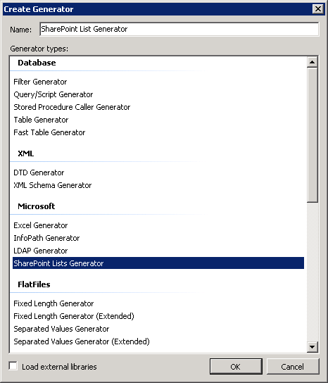
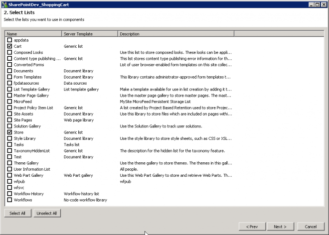
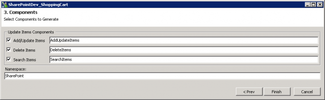
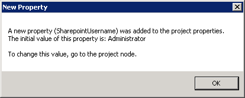
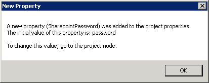
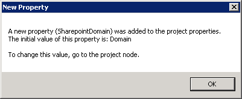
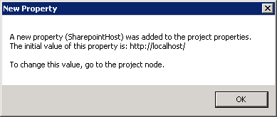
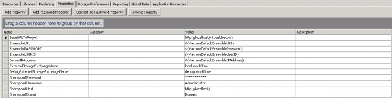
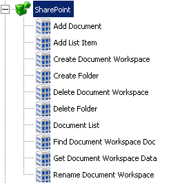

Workflow offers a couple of options when working with Sharepoint.
There is the Integration Component for Sharepoint List manipulation or there is the library.
New 
Integration Component
Choose "Microsoft"
SharePoint Lists Generator

Next fill in your details
| Sharepoint site: | |
|---|---|
| Use authentication | |
| Username: | |
| Password: | |
| Domain: |
Choose which Lists you want to work with

Give it a Namespace and Component names

Add this Library to your Workflow and pull in the components you need.
You can use the Search Items where ID - IS NOT NULL if you want all items returned.
Precreated DLL
Another option is to use the DLL created by Symantec.
Create a Web Forms project and add in:
LogicBase.Components.SharePoint.dll
This will then prompt and tell you new Properties have been created.
When you drag on a component some Properties will be created for.
- SharepointUsername
- SharepointPassword
- SharepointDomain
- SharepointHost
 
 
Go to the Project Root then the Properties Tab.

There will then be a number of Components available to you:

- Add Document
- Add List Item
- Create Document Workspace
- Create Folder
- Delete Document Workspace
- Delete Folder
- Document List (https://www.symantec.com/connect/articles/document-list)
- Find Document Workspace Doc
- Get Document Workspace Data
- Rename Document Workspace
Forum
https://www.symantec.com/connect/forums/workflow-reading-sharepoint-list
https://www.symantec.com/connect/forums/workflow-and-sharepoint-lists
https://www.symantec.com/connect/forums/how-get-list-items-sharepoint-list-within-workflow
Articles
https://www.symantec.com/connect/articles/symantec-workflow-and-microsoft-sharepoint